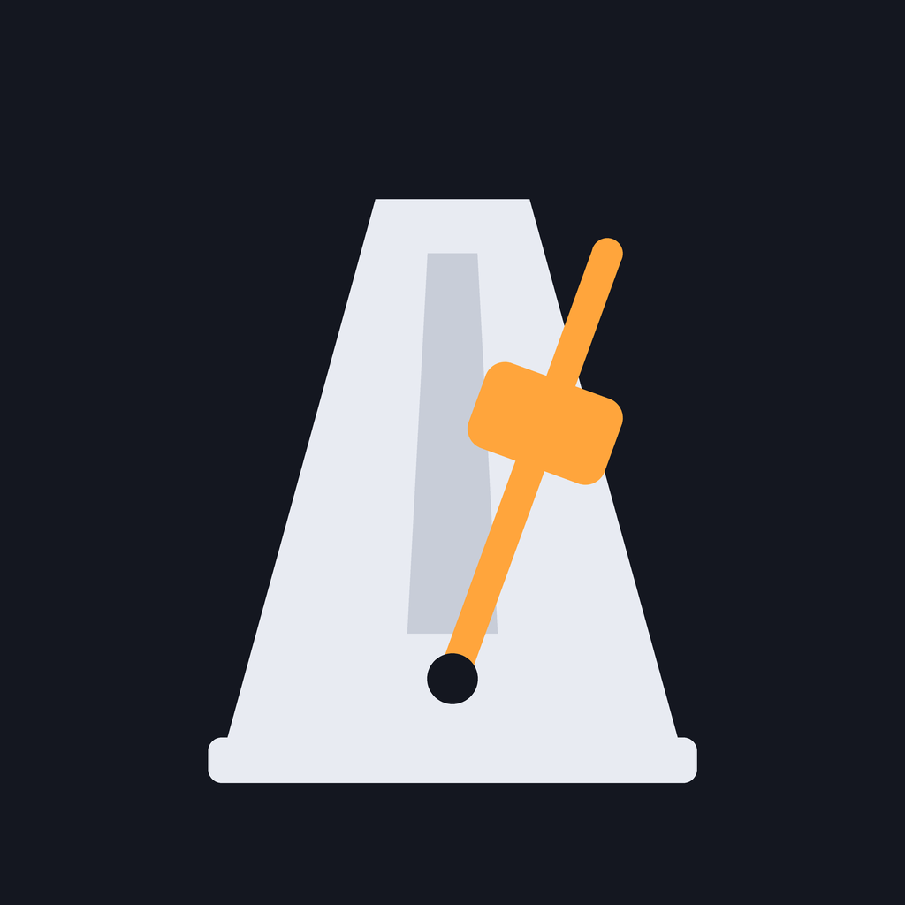

Effective 3 October 2026 · applies to the Tactus apps for iOS, iPadOS and Android.
Tactus does not collect, store on a server, share or sell any personal data. It has no account, no analytics, no advertising and no tracking, and it does not connect to the internet.
The app saves your settings (tempo, meter, accents, sounds and their equalizer, theme, language), your set lists and the sounds you create. This data stays in the app's private storage on your device. It is included in your device backups if you use them (iCloud or Google), which are governed by Apple's or Google's own terms. Uninstalling the app deletes it.
The app reads the clipboard only when you tap Import → Paste from clipboard, and writes to it only when you tap one of the Copy buttons, to move set lists between devices.
Tactus plays audio (on iPhone and iPad also in the background, so the click continues while you look at another app) and keeps the screen on while playing. It does not use the microphone, camera, location, contacts or photos.
The app is suitable for all ages and collects no data from anyone, including children.
If this policy changes, the new version will be published on this page with a new date. Questions: Giacomo Cappon, cappongiacomo@gmail.com.
ItalianoIn vigore dal 3 ottobre 2026 · vale per le app Tactus per iOS, iPadOS e Android.
Tactus non raccoglie, non salva su server, non condivide e non vende alcun dato personale. Non ha account, statistiche, pubblicità né tracciamento, e non si collega a internet.
L'app salva le tue impostazioni (tempo, metro, accenti, suoni ed equalizzazione, tema, lingua), le tue scalette e i suoni che crei. Questi dati restano nella memoria privata dell'app sul tuo dispositivo. Sono inclusi nei backup del dispositivo se li usi (iCloud o Google), regolati dai termini di Apple o Google. Disinstallando l'app vengono cancellati.
L'app legge gli appunti solo quando tocchi Importa → Incolla dagli appunti e li scrive solo quando tocchi uno dei pulsanti Copia, per spostare le scalette tra dispositivi.
Tactus riproduce audio (su iPhone e iPad anche in background, così il click continua mentre guardi un'altra app) e mantiene lo schermo acceso durante la riproduzione. Non usa microfono, fotocamera, posizione, contatti né foto.
L'app è adatta a tutte le età e non raccoglie dati di nessuno, minori compresi.
Se l'informativa cambia, la nuova versione sarà pubblicata su questa pagina con una nuova data. Per domande: Giacomo Cappon, cappongiacomo@gmail.com.